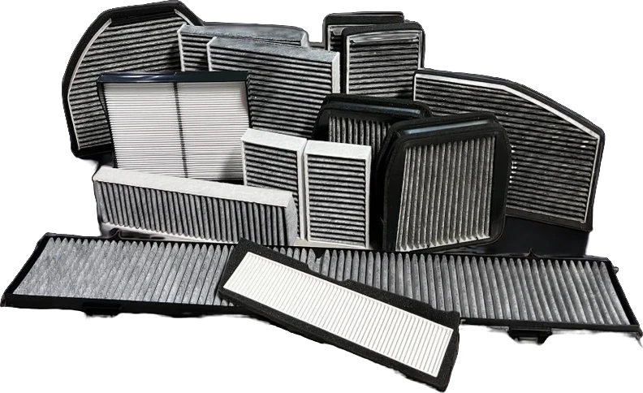

กรองแอร์รถยนต์ไฟฟ้า (EV) สำคัญกว่าที่คิด: ทำไมรถ EV ต้องใส่ใจแผ่นกรองแอร์
โดย 724 อินเตอร์ซัพพลาย ·

หลายคนที่เปลี่ยนมาใช้รถยนต์ไฟฟ้าเข้าใจว่าค่าบำรุงรักษาแทบเป็นศูนย์ เพราะไม่ต้องเปลี่ยนน้ำมันเครื่องหรือกรองอากาศเครื่องยนต์อีกต่อไป แต่มีชิ้นส่วนหนึ่งที่รถ EV ยังต้องมีเหมือนรถน้ำมันทุกประการ นั่นคือ กรองแอร์รถยนต์ และในหลายแง่มุม มันยิ่งสำคัญกว่าเดิม
รถ EV ไม่มีกรองอากาศเครื่องยนต์ แต่มีกรองแอร์
มอเตอร์ไฟฟ้าไม่ต้องดูดอากาศไปเผาไหม้ รถ EV จึงไม่มีกรองอากาศเครื่องยนต์ แต่คนในรถยังต้องหายใจเหมือนเดิม อากาศทุกลิตรที่ไหลเข้าห้องโดยสารจึงต้องผ่านแผ่นกรองแอร์ก่อนเสมอ ดังนั้นกรองแอร์จึงเป็นแผ่นกรองหลักที่เจ้าของรถ EV ต้องดูแล
3 เหตุผลที่กรองแอร์รถ EV ควรได้รับความใส่ใจเป็นพิเศษ
1. ห้องโดยสารเงียบ จึงได้ยินทุกเสียงลม
เมื่อไม่มีเสียงเครื่องยนต์กลบ เสียงลมที่ไหลผ่านแผ่นกรองซึ่งเริ่มอุดตันหรือใส่ไม่พอดีช่องจะได้ยินชัดขึ้น แผ่นกรองที่ผลิตตรงรุ่นและมีจำนวนจีบเหมาะสมช่วยให้ลมไหลผ่านนุ่มนวล ห้องโดยสารจึงเงียบสมกับเป็นรถไฟฟ้า
2. ระบบปรับอากาศทำงานบ่อยกว่า
ผู้ใช้รถ EV จำนวนมากเปิดแอร์ล่วงหน้าผ่านแอปก่อนขึ้นรถ หรือนั่งรอในรถระหว่างชาร์จไฟพร้อมเปิดแอร์ ระบบปรับอากาศจึงทำงานหลายชั่วโมงกว่ารถทั่วไป แผ่นกรองก็สะสมฝุ่นเร็วขึ้นตาม
3. แอร์ใช้พลังงานจากแบตเตอรี่โดยตรง
พัดลมโบลเวอร์และคอมเพรสเซอร์แอร์ของรถ EV ใช้ไฟจากแบตเตอรี่ลูกเดียวกับที่ใช้ขับเคลื่อน เมื่อแผ่นกรองอุดตัน พัดลมต้องทำงานหนักขึ้นเพื่อดันลมให้ได้ปริมาณเท่าเดิม แม้พลังงานที่เสียไปจะไม่มาก แต่การดูแลกรองแอร์ให้สะอาดก็เป็นวิธีง่าย ๆ ที่ช่วยให้ระบบทำงานได้อย่างมีประสิทธิภาพ
เลือกกรองแอร์รถยนต์ไฟฟ้าอย่างไร
- ตรงรุ่น ไม่มีลมรั่ว: รถ EV หลายรุ่นใช้ช่องกรองขนาดเฉพาะ ควรเลือกแผ่นที่ผลิตตามรุ่นนั้นโดยตรง
- กรองฝุ่น PM2.5 ได้ดี: เหมาะกับการใช้งานในเมืองซึ่งเป็นสภาพแวดล้อมหลักของรถ EV
- พิจารณากรองแอร์คาร์บอน: หากต้องจอดชาร์จหรือขับในจุดที่มีควันไอเสียจากรถคันอื่น ชั้นคาร์บอนช่วยลดกลิ่นที่เข้ามาในห้องโดยสาร
- ลมไหลผ่านดี: แผ่นกรองที่ต้านลมน้อยช่วยให้ระบบแอร์ไม่ต้องทำงานหนักเกินจำเป็น
ควรเปลี่ยนกรองแอร์รถ EV บ่อยแค่ไหน
ให้ยึดระยะตามคู่มือของผู้ผลิตรถเป็นหลัก โดยทั่วไปอยู่ที่ประมาณปีละครั้ง แต่ถ้าคุณเปิดแอร์รอในรถบ่อย ขับในพื้นที่ฝุ่นเยอะ หรือเริ่มได้กลิ่นอับ ควรตรวจสภาพและเปลี่ยนให้เร็วขึ้น เนื่องจากรถ EV มีรอบเข้าศูนย์ห่างกว่ารถน้ำมัน จึงควรจดวันที่เปลี่ยนกรองแอร์ครั้งล่าสุดไว้ด้วย
724 อินเตอร์ซัพพลายพัฒนาแผ่นกรองแอร์สำหรับรถยนต์ไฟฟ้ารองรับตลาด EV ที่เติบโตอย่างรวดเร็ว ภายใต้แบรนด์ Protect filter และ Bee filter ค้นหารุ่นที่ตรงกับรถของคุณได้ที่ protectcabinfilter.com